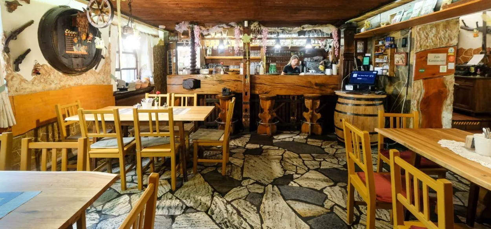
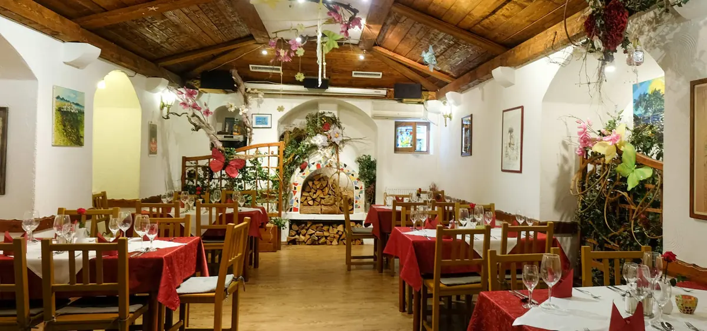
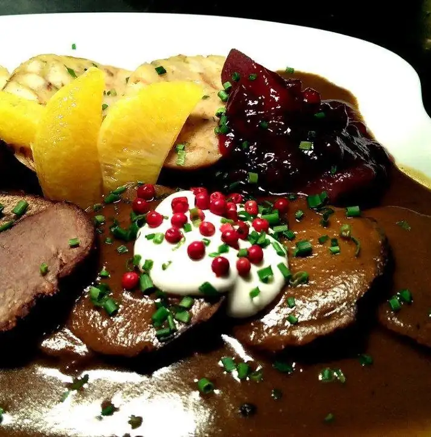
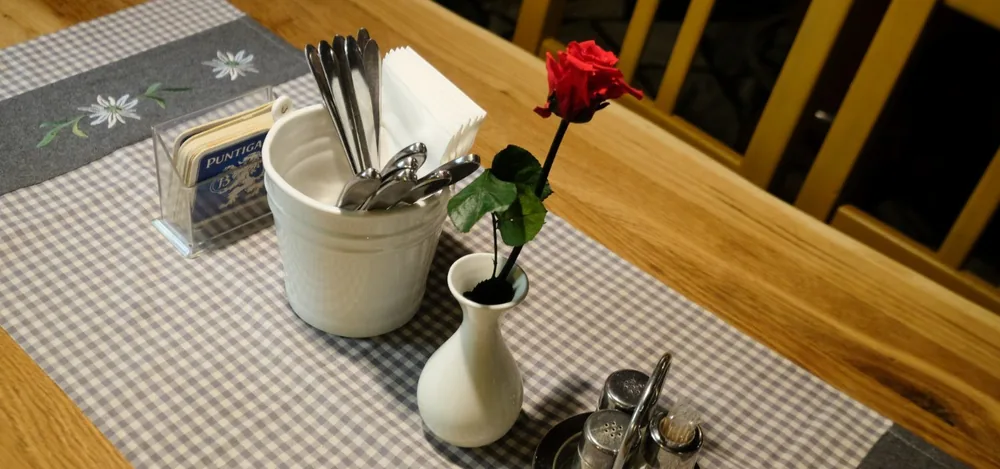
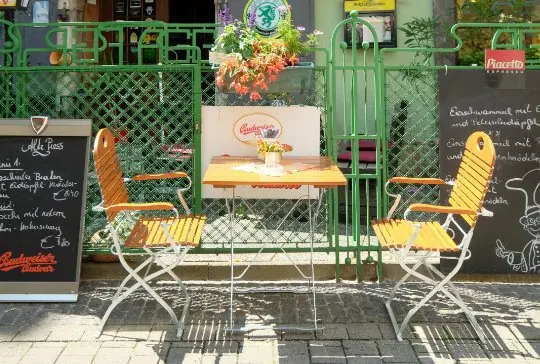
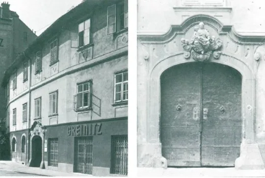
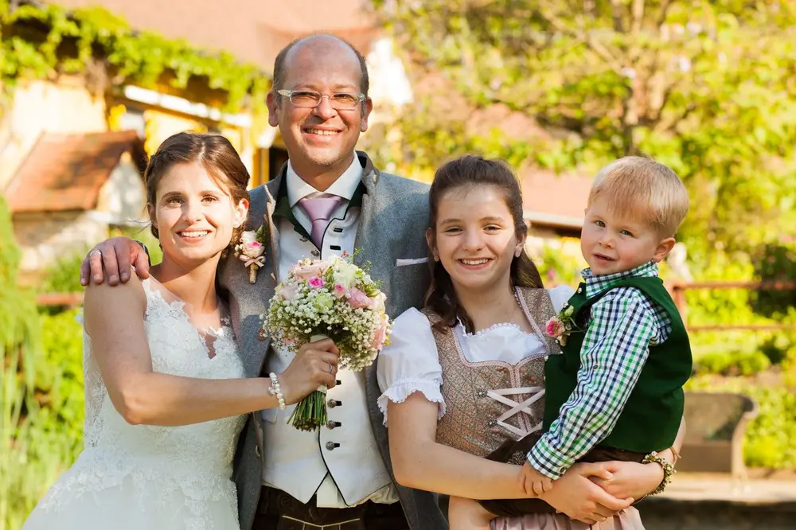
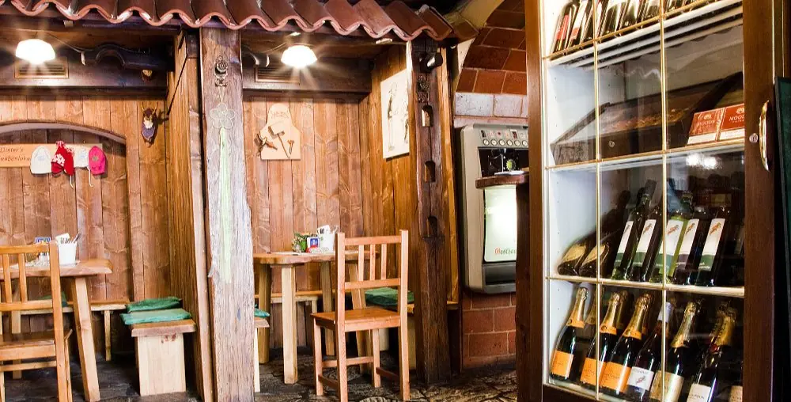

Griesgasse 8, mitten in Graz
1663Gasthaus zur Alten Press
So lange steht das Haus schon in der Griesgasse. Gewölbe, dicke Mauern, alter Steinboden, und eine Küche, die auch ohne Fleisch auskommt.
Öffnungszeiten werden geladen

Das Haus
Holz, Stein und ein bisschen Kitsch
Die Gaststube schmiegt sich in ein altes Grazer Bürgerhaus. Was die Baustruktur vorgibt, bleibt sichtbar: Gewölbe, dicke Mauern, kleine Fenster. Dazu Holz, Stein und rustikales Dekor.
Geführt wird das Haus von Küchenchef und Inhaber Dieter Skrobanek. Die Familie hat die Alte Press vor über fünfzehn Jahren übernommen und hält den alten Steinboden seither instand.
Gekocht wird mit regionalen Produkten. Die Lieferanten stehen weiter unten mit Namen.
Ein Gasthaus, das man erlebt haben muss!

Montag bis Freitag
Mittagstisch
Zehn Gerichte, jede Woche neu zusammengestellt, jeden Tag auch ein vegetarisches. Zu jedem Gericht gehört eine Tagessuppe oder ein Salat.
- Pariser Schnitzerl vom Schwein, dazu Risi Pisi12,60
- Geröstete Kräuternockerl mit Kräuterdip und grünem Salatvegetarisch12,00
- Faschierte Laibchen mit Röstzwiebel, dazu Erdäpfel-Majoranpüree12,60
- Gebackene Champignons, Sauce tartare, grüner Salatvegetarisch12,00
- Roulade vom Steirerhendl mit Vulcanoschinken, Erdäpfelpüree und Madeirasauce12,60
- Schafkäse im Speckmantel gebraten, Blattsalat, Kräuterdip12,00
- Rindsbraten vom Jungstier, Schilchersauce, Marktgemüse und Hörnchen12,60
- Risotto mit Kurkuma, Äpfeln, Walnüssen und Asmontevegetarisch12,00
- Gebackenes Welsfilet mit rotem Zwiebel, dazu Erdäpfelsalat und Kernöl12,60
- Berenwurstl, Zwiebelsenf, Pommes und grüner Salat12,00
Alle Preise in Euro. Der Mittagstisch wechselt wöchentlich.
Auszug aus der Karte
À la carte
Feine steirische Küche, dazu Eigenwilliges. Die vollständige Karte liegt im Haus auf.
Vorspeisen und Suppen
- Klares Rindssupperl, wahlweise mit Frittaten, Fleischstrudel oder Leberknödel6,30
- Erdäpfelsuppe mit Eierschwammerl, Kräutern, Gemüse und Erdäpfelstroh7,10
- Steirische Flecksuppe vom Jungstier8,10
- Steirischer Vorspeisenteller mit Vulcanoschinken und Biokäse der Firma Deutschmann15,90
- Chili-Beef-Tatare vom Jungstier mit Sprossen, Basilikum, Kirschparadeiser, Butter und Toastbrot 21,10 Das Lieblingsgericht der Chefin.
Hauptspeisen
- Rindsgulasch vom Jungstier16,60
- Lammbratwürstl, Schilcherweinkraut und Braterdäpfel19,90
- Wienerschnitzerl vom Schwein mit Petersilerdäpfeln19,90
- Kalbsbeuscherl, handgeputzt, mit Schilcher und Serviettenknödeln19,90
- Schopfbratl mit Kümmel-Schwarzbiersauce, Schilcherweinkraut und Serviettenknödeln 20,10 Das Lieblingsgericht des Chefs.
- Bauerncordon bleu vom Schwein mit Topfen, Burgunderschinken, Gartenkräutern und Steirerkas, dazu Butterreis21,90
- In dunklem Bier geschmorte Wangerl vom Schwein, Dijon-Senfsauce, Erdäpfel-Bärlauchpüree, Lauch und frischer Chili22,50
- Bachforellenfilet, gebraten in hausgemachtem Rosmarin-Kräuteröl22,50
- Gedämpfter Tafelspitz vom Jungstier, Apfelkren, geräuchertes Meersalz, Cremespinat und Braterdäpfel30,90
- Schwammerlrostbraten vom steirischen Jungstier, geschmort38,10


Ohne Fleisch
Vegetarisch und vegan
Pflanzliche Gerichte stehen nicht als Beilage in einer Ecke der Karte, sondern als eigener Gang. Zwei davon sind vegan oder auf Wunsch vegan.
- Geröstete Semmelknödeln mit Ei und grünem Salat, Kernöl17,30
- Geröstete Kräuterspätzle mit Ei und grünem Salat, Kernöl17,30
- Gebratene Topfen-Hirselaibchen mit rotem Kokoscurry, Erdäpfel-Kräuterpüree und frischem Chili17,30
- Polentaschnitten mit Cremespinat, dazu grüner Salat17,30
- Brokkoli-Haferflockenlaibchen mit roten Linsen in rotem Kokoscurryvegan17,30
- Langsam gerührtes Risotto mit Eierschwammerl, Welschriesling, Kirschparadeiser und Basilikumpestoauf Wunsch vegan19,50
Platz und Anlässe
Räume
-
Gastzimmer
Vierzig Plätze im urgemütlich eingerichteten Gastzimmer.
-
Kaminstüberl
Bis 35 Personen, für geschlossene Veranstaltungen. Geburtstag, Sponsion, Weihnachtsfeier oder Firmenevent. Wenn nichts gefeiert wird, dient es auch als Seminarraum mitten in der Stadt. Für Gruppen gibt es eigene Menüvorschläge.
-
Gastgarten
Sitzplätze im Freien vor dem Haus, an der Griesgasse.
-
Lieferservice
Die Speisen kommen über Velofood auch nach Hause.

Seit 1663
Zwei Häuser, ein Wirtshaus
Die Alte Press bestand ursprünglich aus zwei Häusern. Das erste Mal erwähnt werden sie 1663, danach wieder 1701. Um 1700 kaufte die Eisenhändlerfamilie Gamilscheg eines der beiden, um 1785 wurden sie vereint und um 1800 bekam die Fassade ein einheitliches Gesicht.
Portal und Stiegenhaus gestaltete der Baumeister Joseph Huber zwischen 1760 und 1770. 1824 wurde die Griesgasse verbreitert, deshalb hat die Front bis heute einen Knick. Über dem Portal sitzt eine Sandsteinreliefgruppe mit einer Madonna und Kind.
Vom Erdgeschoss bis in die Hoftrakte zieht sich Tonnen- und Kreuzgratgewölbe. Der Steinboden, über den heute die Gäste gehen, lag früher auch in den Gängen der Obergeschosse.


Woher es kommt
Regionale Lieferanten
- RindMetro Graz und Karnerta Graz
- Kalb und LammKarnerta, Graz
- EierLandwirtschaft Teißl, Heimschuh
- BiokäseFirma Deutschmann, Frauenthal
- MilchprodukteÖsterreich, AMA-Gütesiegel
- ErdäpfelÖsterreichische Landwirtschaft
- ÄpfelFirma Sehorsch
- SchilcherWeingut Markus Klug
- KernölFirma Esterer, Kalsdorf

Wann offen ist
Öffnungszeiten
| Tag | Geöffnet |
|---|---|
| Montag | 11:30 bis 23:00 |
| Dienstag | 11:30 bis 23:00 |
| Mittwoch | 11:30 bis 23:00 |
| Donnerstag | 11:30 bis 23:00 |
| Freitag | 11:30 bis 23:00 |
| Samstag | 11:30 bis 15:00 |
| Sonntag, Feiertag | Geschlossen |
Mittagstisch
Von Montag bis Freitag. Danach geht es mit der Karte weiter, bis 23 Uhr.
Samstag
Nur zu Mittag geöffnet, um 15 Uhr ist Schluss.
Sonntag und Feiertage
Geschlossen. An diesen Tagen liefert auch Velofood nicht.
Tisch bestellen
Reservierung
Sonntage und Feiertage sind gesperrt, die Uhrzeiten kommen aus den Öffnungszeiten des gewählten Tages.
Ihr Mailprogramm wurde geöffnet. Die Reservierung geht erst ein, wenn Sie die vorbereitete Nachricht auch absenden. Öffnet sich kein Fenster, rufen Sie bitte unter +43 316 71 97 70 an.
Lieber telefonisch? +43 316 71 97 70, Montag bis Freitag ab 11:30 Uhr.
Es werden keine Daten gespeichert und keine Daten weitergegeben. Ihre Angaben gehen ausschließlich per E-Mail an das Gasthaus.
Kontakt
So finden Sie uns
- Adresse
- Griesgasse 8
8020 Graz
Auf der Karte ansehen - Telefon
- +43 316 71 97 70
- office@zuraltenpress.at
- Küchenchef
- Dieter Skrobanek
Lage
Hinter dem Hotel Wiesler, einen Steinwurf vom Kunsthaus entfernt, mitten in Graz.
Auszeichnungen
Genuss Wirt, Genuss Region, Kulinarisches Erbe und Gute steirische Gaststätte.
In eigener Sache
Diese Seite wurde als Vorschlag für die Alte Press gebaut.
Auf Ihrer jetzigen Seite steht vieles doppelt: Die Küche wird auf der Startseite, auf der Speisekarte und auf Über uns jeweils neu beschrieben, und die Geschichte des Hauses füllt drei lange Absätze über Kordongesimse und Parapetfelder. Hier steht alles einmal, in der Reihenfolge, in der ein Gast danach sucht.
Und das Alter des Hauses ist Ihr stärkstes Argument. Im Original steht 1663 in einem Nebensatz. Hier ist die Jahreszahl das erste, was jemand sieht, direkt neben dem Steinboden, den es seit damals gibt.
Was Sie hier sehen, ist die Startseite. Zur fertigen Website gehören außerdem:
- SpeisekarteDie ganze Karte, der Mittagstisch und alle Preise.
- Vegetarisch und VeganNur die pflanzlichen Gerichte, die sonst in der Karte untergehen.
- Räume und FeiernGastzimmer, Kaminstüberl bis 35 Personen und die Gruppenmenüs.
- Geschichte1663, die zwei Häuser, der Baumeister Joseph Huber und das Gewölbe.
- KontaktAnfahrt, Lieferservice über Velofood und alle Kontaktdaten.
Mit dieser Startseite sind das sechs Seiten, fertig aufgesetzt.
einmalig für die komplette Website mit allen sechs Seiten, Texten, Bildbearbeitung und Reservierungsformular.
- Erstes Jahr Hosting inklusive, danach 30 Euro im Monat, monatlich kündbar.
- Eine Korrekturrunde ist enthalten.
- Die Website gehört Ihnen.
- Kleinunternehmer nach österreichischem Recht, es wird keine Umsatzsteuer ausgewiesen.